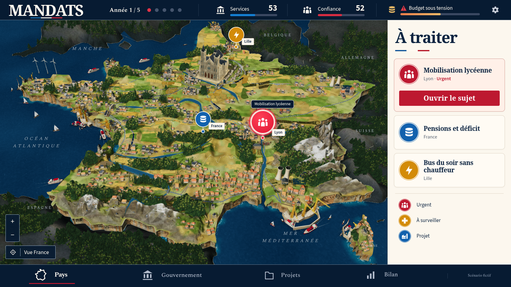
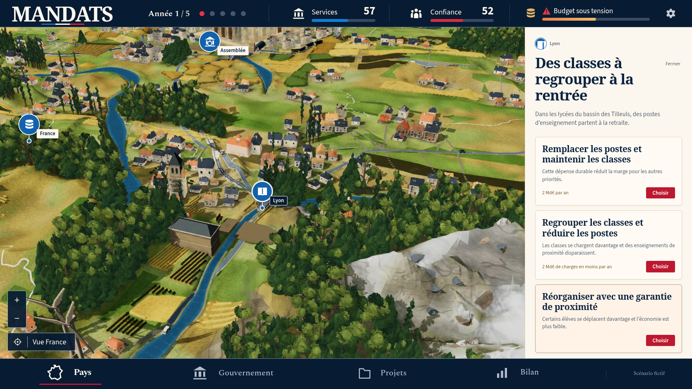
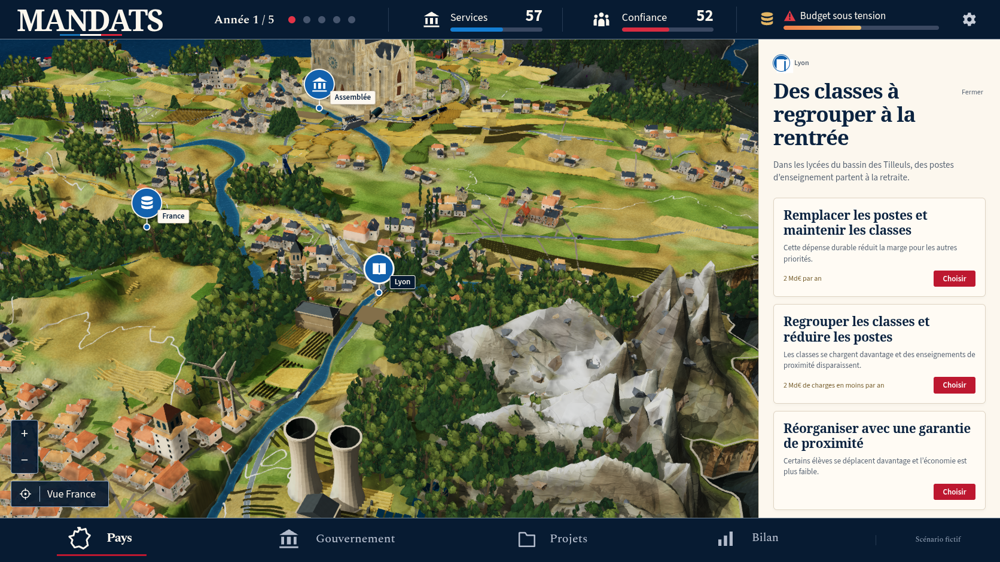
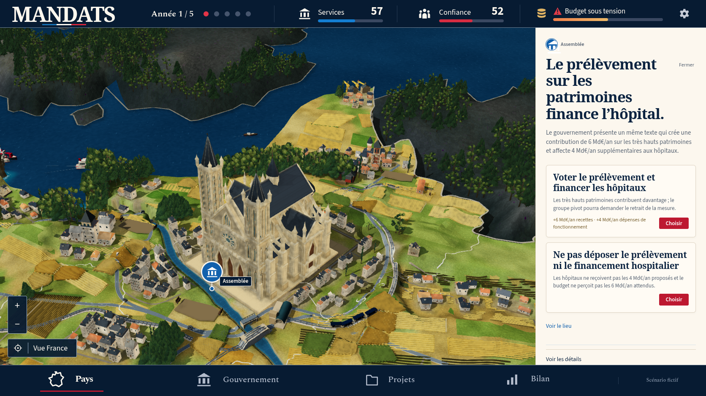
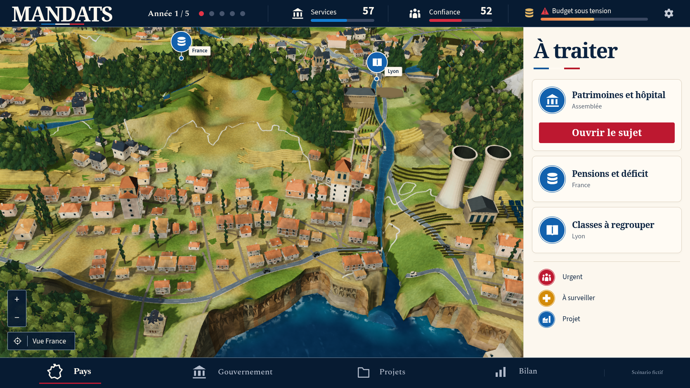
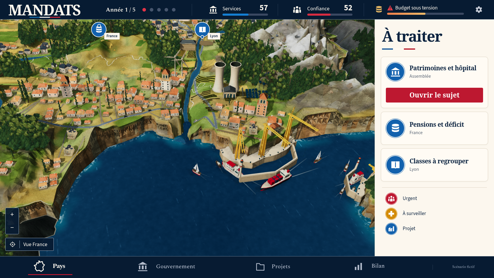
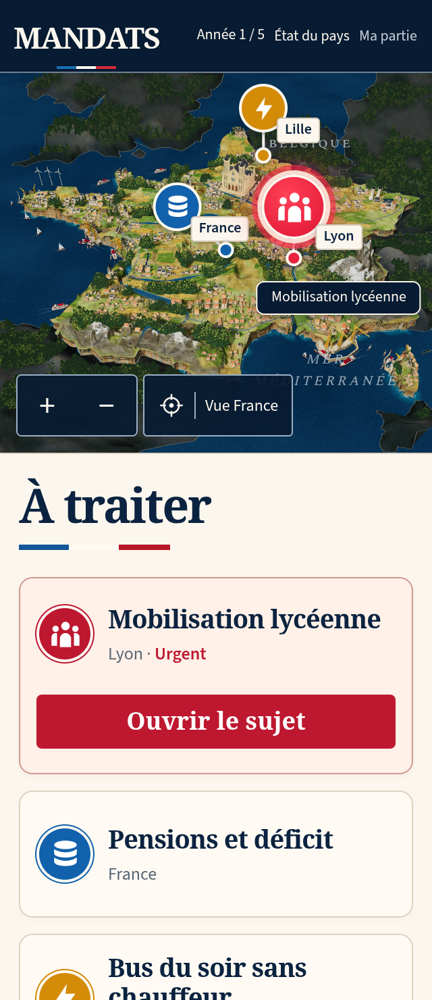
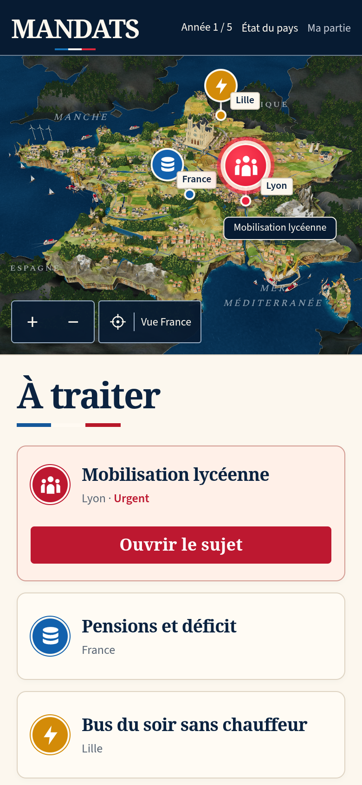
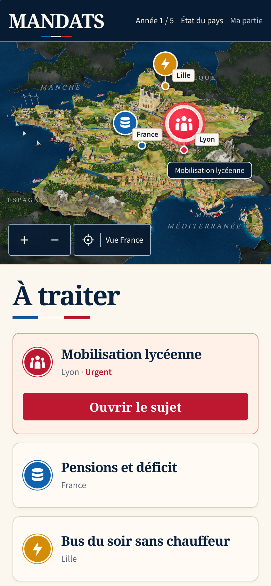

MANDATS : comparaison 50
La fidélité reste en cours. Les contrôles techniques passent localement ; le diorama reste en dessous de la référence. La PR 194 reste en brouillon et la modélisation continue.
Captures réelles du 13 octobre 2026 sur le build complet vérifié le 12 octobre. La décision scolaire produit les chiffres et la mobilisation affichés ; les valeurs de la maquette ne sont pas injectées.


Référence confirmée.Jeu réel après regroupement scolaire.
| Partie | Changement vérifié | Écart restant |
|---|
| Cathédrale | Façade élargie et silhouette supérieure abaissée depuis la source Blender existante. Deux exports frais identiques. Paris conserve une échelle uniforme ; la profondeur réelle reste identique. Le centre est décalé de 0,025 et le socle soutient toute l’emprise. | Flèches opaques et détails encore différents de la référence ; richesse des ensembles urbains insuffisante. |
| Terrain et contexte | Textures du contexte précuites avec les mêmes pixels et les mêmes uploads GPU. L’archive terrain conserve 290 625 valeurs exactes de hauteur ; les cellules absentes utilisent le calcul canonique. | Ce calcul déplacé avant le chargement ne constitue pas une amélioration artistique ni une mesure de FPS sur appareil réel. |
| Roches et côtes | Normales côtières à une échelle plus fine. Le relevé découvre deux causes à corriger ensuite : fractures minérales ignorées par le budget de faces, et réglage côtier absent du shader chargé depuis l’archive. | Massifs trop facettés, falaises régulières et embouchure du Rhône encaissée. Aucune fracture minérale appliquée n’est revendiquée pour cette passe. |

Bâtiments, boisements et matières.
Relief et neige encore trop larges et facettés.
Façade, silhouette et appui sur le socle.
Falaises et rivière, cadrage obtenu au pointeur.
Vue du port élargie par les commandes du jeu.
Formats mobiles réels

320 × 740, DPR2.
390 × 844, DPR2.
WPE WebKit 390 × 844, DPR2, après Babylon et fin du rendu.Vérifications et limites
Build complet : 1 082 tests réussis, trois vérifications TypeScript, Vite, pré-rendu et 152 ressources hors connexion. Suites originales rework : 23 réussites et neuf omissions prévues ; social : 13 réussites et trois omissions prévues. Aucun échec ni résultat instable ; tests, délais, reprises et workers inchangés. Le test original WebKit haute densité passe aussi séparément.
Quatorze captures natives de production, avec empreintes des bundles réellement servis identiques au build immuable et aucune erreur JavaScript, console, HTTP ou requête. Le relevé trouve 21 monuments sans chevauchement de canopée, 2 540 pieds d’arbres et 90 bases de rochers soutenus. Les 150 points des 50 faces inférieures de la cathédrale sont soutenus ; ses pieds et les deux grandes faces de son socle ne recouvrent pas l’eau. Ces observations ne certifient pas toutes les collisions ou tous les états futurs.
L’hôpital est financé au tour 1 et livré au tour 3 par de vraies décisions. Son emplacement était déjà libre ; cela ne démontre pas le masquage puis la restauration d’arbres chevauchants.
La CI distante du parent 49 conserve un échec WebKit de chargement initial à haute densité : rework 22 réussites, neuf omissions, un échec ; la suite sociale suivante n’a pas été exécutée. Les autres workflows du parent réussissent. Les succès locaux de cette passe ne remplacent pas une nouvelle CI distante.
Manifeste · Captures natives · Build · Appuis de Paris · Appuis des arbres et rochers · Monuments et shader réel · CI du parent